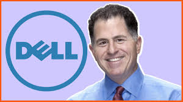

Gallery
Moments from Dell's journey

From a dorm room to a Fortune 500 empire
Dell was founded in 1984 from Michael Dell's University of Texas dorm room as "PC's Limited". With just $1,000 in capital, Michael had a simple but revolutionary idea: sell custom-built personal computers directly to consumers, bypassing traditional retail channels. This direct-to-consumer model eliminated middlemen, reduced costs, and allowed Dell to offer higher-spec machines at lower prices.
The company was renamed Dell Computer Corporation in 1988, the same year it went public with an IPO that raised $30 million. In 2013, Michael Dell led a $24.9 billion buyout to take the company private, and in 2018, Dell Technologies returned to the public market under the NYSE ticker DELL.

Key moments in the journey of Dell Technologies
Recognitions and milestones in Michael Dell's career
At age 27, became the youngest CEO on the Fortune 500
Led the $67B EMC acquisition, the largest in tech history
Revolutionized PC sales with direct-to-consumer model
Transformed manufacturing with custom, build-to-order systems
Over $1.9B donated through the Michael & Susan Dell Foundation
Member, Business Council & Council on Foreign Relations
Moments from Dell's journey
Dell Technologies in 2024
Dell Technologies is a multinational technology company that develops, sells, repairs, and supports computers and related products and services. Named after its founder, Michael Dell, the company is one of the world's largest technology infrastructure companies, serving enterprise, SMB, and consumer markets with a comprehensive portfolio of servers, storage, networking, PCs, and software solutions. Through strategic acquisitions including EMC, VMware, and Perot Systems, Dell Technologies has become a powerhouse in cloud computing, data storage, and digital transformation.